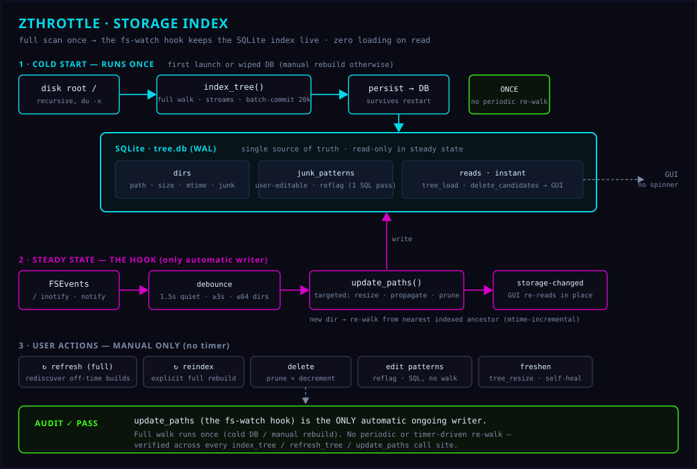

zthrottle is a from-scratch desktop system-stress and benchmark tool in Rust behind a cyberpunk HUD. It carries four real single-axis benchmarks — storage throughput/IOPS, network throughput/latency, compute, and memory bandwidth/latency — and the contention profiler: the world-first surface that drives every subsystem at once and shows how each one degrades under load from the others, because every benchmark that measures one thing with the rest idle is measuring a machine that never exists in practice. Around the benchmarks sits a full system-monitor suite. It is a thin Tauri v2 shell over the pure-Rust zthrottle-core engine, which owns all benchmark logic, the monitor data harvest, the command surface and the served frontend. Paid product; early-stage and in active development.
Four Benchmarks
Disk sequential + random throughput and IOPS (direct I/O, bypassing the page cache), network throughput and latency, multi-threaded compute, and memory bandwidth + latency — each a real measurement, not a synthetic score.
Contention Profiler
Loads disk, network, CPU and memory simultaneously and reports the interaction matrix — how much each axis degrades under pressure from the others, plus the bottleneck migration timeline. This is the reason the tool exists.
System Monitor
A tabbed monitor: processes (CPU/memory table, CPU-history graph, per-process signal menu — TERM/KILL/STOP/CONT/HUP and more), per-interface network with live download/upload sparklines, and a global storage view.
Storage Tree
A persistent SQLite index of the whole directory tree — instant load on launch, kept accurate by an mtime-diff refresh. Drill in, find the biggest space hogs anywhere (the dirs macOS Storage hides), flag build/cache junk, and delete to reclaim space. SMB/NFS mounts are detected and never walked blind.
The contention idea
A disk benchmark with the CPU idle, a CPU benchmark with the disk idle — four numbers that never happen together. Real workloads saturate several subsystems at once and the interference between them is the number that predicts behaviour. The contention profiler runs every axis concurrently, measures each axis' throughput while the others hammer the machine, and renders the degradation as a matrix plus a bottleneck-over-time timeline.
Running
# from the zthrottle app repo pnpm install pnpm --dir app tauri dev # dev build with hot reload pnpm --dir app tauri build # release bundle
Architecture
The GUI is a thin Tauri v2 shell; every calculation lives in zthrottle-core. The engine exposes one dotted command surface (zth_invoke) for benchmarks, and a lock-free worker pool for the monitor data harvest so a minutes-long storage scan never blocks the UI. Because the engine carries the served frontend, the same benchmark and monitor code embeds inside the other MenkeTechnologies apps. See the MenkeTechnologiesMeta umbrella for the wider stack.
The storage index — full scan once, then hooks
The persistent directory index is built by a single full filesystem walk on first launch (or a wiped DB), streamed to the UI and committed in batches so it survives a mid-walk restart. After that, the fs-watch hook is the only thing that automatically writes to it: an FSEvents / inotify watch on $HOME, debounced, drives a targeted update_paths that re-sizes only the changed directories and bubbles the delta up to their ancestors — never a whole-tree re-walk. A freshly-built target/ is discovered by re-walking from its nearest already-indexed ancestor. The GUI reads the index instantly on every open: no scan-on-open, no loading screen. Every other write — refresh, reindex, delete, a junk-pattern edit (one SQL pass, no re-walk), a size freshen — is a button the user pressed.

update_paths is the only automatic writer; the full walk runs once (cold DB or manual rebuild), with no periodic re-walk.